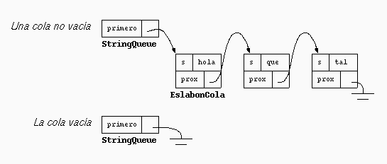

Programación II
¿Qué es Programación II?
Programación II es un nivel más avanzado dentro del aprendizaje de la programación, en el cual se profundiza en la creación de programas más complejos y estructurados. En esta etapa, los estudiantes ya no solo escriben instrucciones básicas, sino que comienzan a utilizar técnicas más organizadas y eficientes para resolver problemas. Se enfoca en mejorar la lógica de programación, la reutilización del código y la construcción de soluciones más completas, lo que permite desarrollar aplicaciones más funcionales y profesionales.

Estructuras de control
Las estructuras de control son herramientas fundamentales en la programación que permiten decidir el flujo que seguirá un programa. Estas estructuras hacen posible que el programa tome decisiones o repita acciones según ciertas condiciones. Por ejemplo, las condiciones como if permiten ejecutar un bloque de código solo si se cumple una condición específica, mientras que los ciclos como for y while permiten repetir una acción varias veces. Gracias a estas estructuras, los programas pueden ser dinámicos y adaptarse a diferentes situaciones.

Funciones
Las funciones son bloques de código diseñados para realizar una tarea específica dentro de un programa. Su principal ventaja es que permiten organizar mejor el código, evitando repeticiones y facilitando su comprensión. Una función puede ser utilizada varias veces dentro del mismo programa, lo que ayuda a ahorrar tiempo y hacer el código más eficiente. Además, permiten dividir un problema grande en partes más pequeñas y manejables, lo que mejora la claridad y el mantenimiento del programa.

Arreglos o listas
Los arreglos o listas son estructuras de datos que permiten almacenar varios valores dentro de una sola variable. Esto facilita el manejo de grandes cantidades de información, ya que en lugar de crear muchas variables, se pueden guardar todos los datos en un solo conjunto organizado. Los arreglos son muy útiles para trabajar con datos como números, nombres o cualquier tipo de información, y permiten acceder a cada elemento mediante una posición o índice.

Video sobre computación
Para aprender más:
| Nombre | Enlace |
|---|---|
| Video de computación | Ver video |